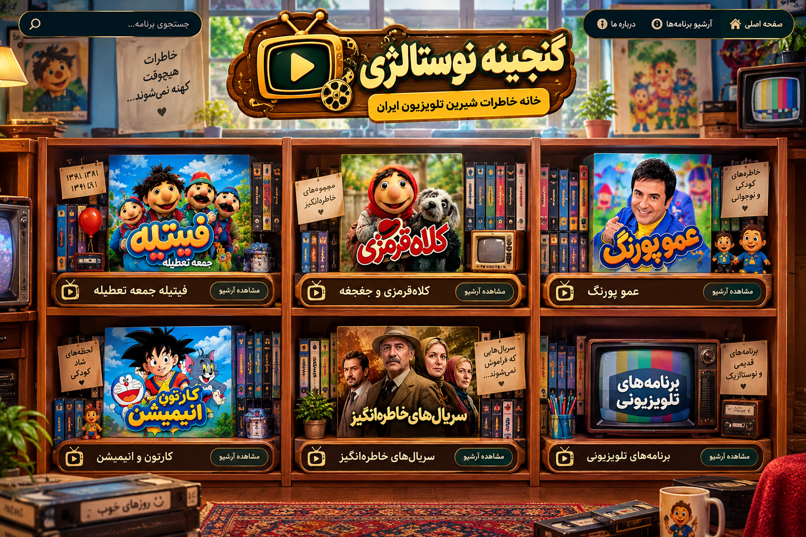

📺
فیتیله جمعه تعطیله
آرشیو خاطرهانگیز فیتیله از سال ۱۳۸۱ تا ۱۳۹۴
مشاهده آرشیو
آرشیو خاطرهانگیز فیتیله از سال ۱۳۸۱ تا ۱۳۹۴
مشاهده آرشیومجموعههای خاطرهانگیز کلاهقرمزی
مشاهده آرشیوبرنامههای خاطرهانگیز عموپورنگ
مشاهده آرشیولحظههای شاد کودکی
مشاهده آرشیوسریالهایی که فراموش نمیشوند
مشاهده آرشیوبرنامههای قدیمی و نوستالژیک
مشاهده آرشیو